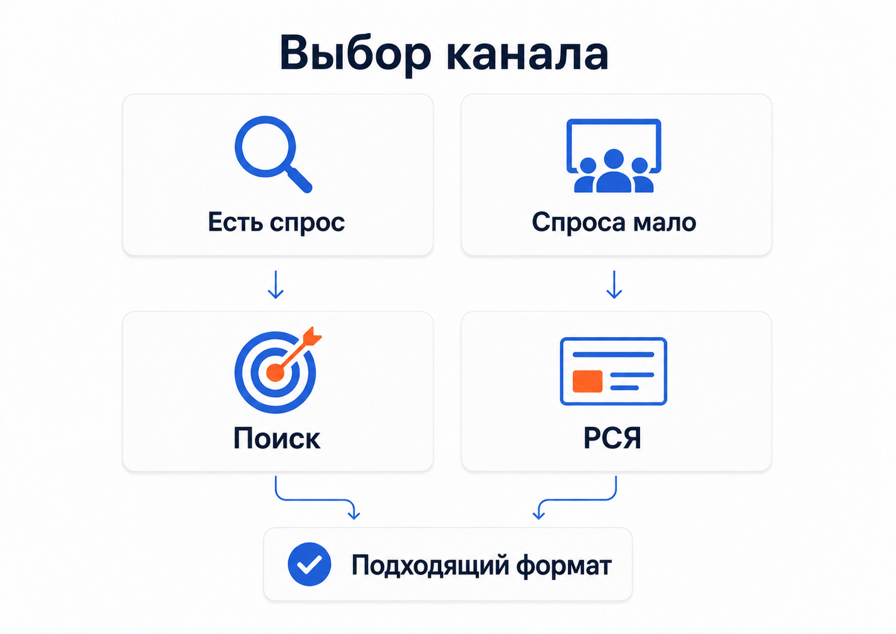

Продвижение юридических услуг: как привлекать клиентов из поиска и рекламы
Как продвигать юридические услуги через SEO, Яндекс Директ, карты и контент. Разбор посадочных страниц, аналитики, качества заявок и реальных кейсов.
Продвижение юридических услуг лучше строить вокруг конкретной проблемы клиента. Человек редко ищет абстрактную «юридическую помощь». Обычно ему нужен юрист по разводу, банкротству, арбитражному спору, регистрации, взысканию задолженности или другой понятной задаче.
Поэтому универсальная реклама юридической компании со списком из двадцати услуг обычно проигрывает более точной связке:
проблема клиента → конкретная услуга → подходящая страница → консультация или заявка.
Для привлечения клиентов имеет смысл сочетать несколько каналов: SEO, Яндекс Директ, работу с картами и отзывами, экспертный контент. Но набор инструментов зависит от направления права, географии и того, насколько сформирован спрос.
Особенности продвижения юридических услуг
Главная сложность юридической тематики - огромная разница между направлениями.
Запросы «адвокат по уголовным делам», «юрист по банкротству» и «регистрация в Роскомнадзоре» относятся к юридической сфере, но аудитория, мотивация и путь до обращения у них разные.
Даже внутри одной компании могут одновременно существовать:
• услуги для физических лиц;
• сопровождение бизнеса;
• судебные споры;
• консультации;
• подготовка документов;
• регулярное юридическое обслуживание;
• редкие специализированные услуги.
Поэтому начинать продвижение лучше не с выбора рекламного канала, а с разделения услуг на самостоятельные направления.
Для каждого направления нужно определить:
1. Кто принимает решение.
2. Что произошло перед поиском юриста.
3. Как человек формулирует свою проблему.
4. Насколько срочно ему нужна помощь.
5. Какие вопросы он задает до обращения.
6. Что может вызвать доверие или, наоборот, заставить уйти с сайта.
После этого становится понятнее, где искать клиента и на какую страницу его вести.
Какие каналы подходят для продвижения юридических услуг
Универсального источника клиентов для всех юридических компаний нет.
| Канал | Когда особенно полезен |
|---|---|
| SEO | Есть стабильный поисковый спрос и много направлений услуг |
| Яндекс Директ | Нужно получать обращения по уже сформированному спросу |
| Яндекс Карты | Компания работает с клиентами в конкретном городе или районе |
| Контент | Клиент долго выбирает юриста и изучает вопрос перед обращением |
| Ретаргетинг | Решение принимается не сразу |
| Площадки и каталоги | Пользователи сравнивают нескольких специалистов |
Чаще всего наиболее сильная комбинация для юридической компании - SEO и контекстная реклама. Оба канала работают с людьми, которые уже начали искать решение своей проблемы.
Разница в скорости. Через Яндекс Директ трафик можно получать после запуска кампаний, а поисковому продвижению требуется время на индексацию страниц и рост их видимости.

SEO-продвижение юридических услуг
SEO в этой тематике начинается со структуры сайта.
Если юридическая компания занимается разными направлениями, одной страницы «Наши услуги» недостаточно. Под основные группы спроса нужны самостоятельные посадочные страницы.
Например:
• банкротство физических лиц;
• сопровождение банкротства бизнеса;
• семейные споры;
• раздел имущества;
• наследственные споры;
• арбитраж;
• взыскание задолженности;
• юридическое сопровождение бизнеса.
Не нужно создавать сотни почти одинаковых страниц под каждую словоформу. Страница должна соответствовать отдельной реальной услуге или самостоятельному поисковому интенту.
Что должно быть на странице юридической услуги
Человеку необходимо быстро понять, попал ли он туда, куда нужно.
Обычно полезно показать:
• какую проблему решает услуга;
• кому она подходит;
• что входит в работу;
• этапы взаимодействия;
• возможные сроки, если их можно определить заранее;
• стоимость или принцип расчета цены;
• специалистов по этому направлению;
• релевантные кейсы;
• ответы на частые вопросы;
• способы связи.
Общие формулировки вроде «индивидуальный подход», «высокая квалификация» или «многолетний опыт» сами по себе мало помогают выбрать юриста. Намного полезнее конкретика по нужному человеку направлению.
Информационные статьи тоже могут приводить клиентов
Часть аудитории начинает путь не с запроса услуги, а с вопроса.
Например:
• что делать после получения претензии;
• как взыскать долг с контрагента;
• какие документы нужны для банкротства;
• что делать при разделе имущества;
• как зарегистрировать определенные сведения;
• как подготовиться к судебному спору.
Такие материалы позволяют получить информационный поисковый трафик и познакомить человека со специалистом еще до того, как он начнет искать исполнителя.
Но статья должна действительно отвечать на вопрос. Если весь текст написан только ради перехода к кнопке «заказать консультацию», он хуже выполняет свою основную задачу.
Внутри статьи уже можно естественно сослаться на соответствующую услугу или кейс.
Яндекс Директ для юридических услуг
Контекстная реклама особенно хорошо подходит направлениям, где человек начинает искать исполнителя сразу после появления конкретной задачи.
В этом случае основной интерес представляет поиск Яндекса.
Пользователь сам вводит запрос, например:
• юрист по арбитражным спорам;
• юридическое сопровождение бизнеса;
• адвокат по конкретной категории дел;
• подготовка юридических документов;
• регистрация или публикация обязательных сведений.
Задача рекламы - показать предложение в момент, когда необходимость в услуге уже появилась.
Реальный пример: юридический консалтинг
У меня есть длительный проект в сфере юридического консалтинга. Среди направлений были публикации на Федресурсе и в Вестнике государственной регистрации, регистрация в Роскомнадзоре, ФРМО, категорирование объектов КИИ и другие специализированные услуги.
Особенность этого проекта в моменте возникновения спроса. Пользователь редко интересуется такой услугой заранее. Сначала появляется конкретная обязательная задача, после чего он начинает искать способ ее выполнить.
Поэтому основной объем обращений здесь дает поисковая реклама. За годы работы рекламный бюджет проекта вырос до более чем 18 млн рублей в год. Стоимость обращения сильно отличается между услугами: простые лид-магниты могут давать лиды примерно по 150-300 рублей, а редкие и сложные направления стоят значительно дороже.
Этот пример хорошо показывает, почему нельзя говорить о средней цене заявки на юридические услуги вообще. Даже внутри одного бизнеса разные направления могут иметь совершенно разную экономику.
Когда одного поиска недостаточно
Бывают услуги, которые потенциальный клиент почти не ищет напрямую.
В моем проекте по выкупу акций средний чек составлял несколько миллионов рублей, но точного поискового спроса было мало. Основной объем обращений удалось получать через РСЯ и автоматические кампании. С учетом дополнительных точек контакта фактическая стоимость лида составляла около 2500 рублей.
Кейс «Выкуп акций, высокий чек»
Для юридической компании похожая ситуация может возникнуть со сложными корпоративными услугами, о существовании которых клиент знает не всегда.
Поэтому схема «собрать ключевые слова и запустить поиск» подходит не каждому направлению.

Не стоит рекламировать все юридические услуги одной кампанией
Одна из типичных ошибок - собрать в одну структуру семейное право, банкротство, арбитраж, уголовные дела и корпоративное сопровождение.
У этих направлений:
• разная аудитория;
• разные запросы;
• разная стоимость клика;
• разная конверсия;
• разные посадочные страницы;
• разная ценность клиента.
Если все объединить, становится сложнее понять, какое направление расходует деньги и какие обращения действительно выгодны.
Я предпочитаю разделять рекламу хотя бы по крупным видам услуг, а уже внутри смотреть, насколько сильно нужно дробить структуру дальше.
Избыточное дробление тоже мешает. Десятки маленьких кампаний с несколькими конверсиями в каждой дают алгоритмам меньше данных для оптимизации.
Посадочная страница влияет на рекламу не меньше настроек кампании
Даже точное объявление не поможет, если пользователь после перехода попадает на страницу, где перечислены десятки несвязанных услуг.
Запрос и страница должны продолжать одну мысль.
Если человек ищет сопровождение арбитражного спора, на первом экране ему нужна информация именно про арбитраж. Если он ищет юридическое сопровождение бизнеса, ему не нужно сначала изучать семейное и наследственное право.
На хорошей посадочной странице я бы обязательно проверил:
• понятно ли предложение с первого экрана;
• совпадает ли оно с рекламным запросом;
• есть ли информация о специалисте;
• показаны ли релевантные кейсы;
• объяснен ли процесс работы;
• понятен ли следующий шаг;
• удобно ли позвонить или оставить заявку с телефона.
Чем серьезнее проблема клиента и выше стоимость услуги, тем больше информации он обычно изучает перед контактом.
Кейсы и экспертность помогают выбрать между похожими юристами
При продвижении юридической компании важно не ограничиваться перечислением услуг.
Пользователь может одновременно открыть несколько сайтов. Предложения часто похожи, поэтому ему нужны признаки, по которым можно сравнить исполнителей.
Полезны:
• специализация конкретных юристов;
• опыт по нужной категории дел;
• разборы реальных ситуаций;
• кейсы;
• публикации;
• отзывы;
• понятные фотографии специалистов;
• прозрачная информация о компании;
• условия взаимодействия.
Кейс особенно полезен, если он связан с той же задачей, которую решает потенциальный клиент.
Поэтому на странице конкретной услуги лучше показывать несколько релевантных примеров, а не общую ленту всех проектов компании.
Яндекс Карты и отзывы
Для юридической фирмы с офисом отдельным каналом становится локальный поиск.
Карточка компании в Яндекс Картах может показывать контакты, адрес, фотографии, режим работы, оценки и отзывы. Отзывы помогают пользователю сравнивать организации.
Карточку стоит полностью заполнить и поддерживать в актуальном состоянии.
Отзывы лучше собирать от реальных клиентов после завершения работы. Для частного юриста или компании, работающей преимущественно онлайн, роль карт может быть меньше. Для офиса, куда люди приезжают лично, этот канал намного важнее.
Как оценивать эффективность продвижения
Количество заявок само по себе мало о чем говорит.
Одна форма может оказаться реальным клиентом на крупный договор, другая - бесплатным вопросом, третья - обращением по услуге, которой компания вообще не занимается.
Поэтому в юридической тематике я бы считал минимум несколько уровней:
1. Обращение.
2. Целевой лид.
3. Проведенная консультация.
4. Коммерческое предложение или следующий этап.
5. Заключенный договор.
6. Выручка или прибыль от клиента.
Если реклама оценивается только по стоимости заполнения формы, дешевые нецелевые заявки могут выглядеть эффективнее дорогих, но качественных обращений.
Для длинной сделки полезна связь Метрики и CRM. В аналитику можно передавать подтвержденные заявки, сделки и другие статусы, происходящие уже после обращения на сайте.
Это особенно полезно для корпоративной юридической практики, где между первым запросом и договором может пройти значительное время.
Как я бы выстроил продвижение юридической компании
Последовательность зависит от проекта, но базовая логика выглядит так.
1. Разделить услуги
Определить основные направления и не пытаться продвигать все одинаково.
2. Проверить существующий спрос
Посмотреть, какие услуги люди уже активно ищут, а где прямых коммерческих запросов мало.
3. Подготовить посадочные страницы
Для приоритетных направлений создать отдельные страницы, соответствующие реальным запросам пользователей.
4. Настроить аналитику
До запуска рекламы должны фиксироваться формы, звонки и другие значимые действия.
5. Запустить Яндекс Директ на сформированный спрос
В первую очередь проверить направления, где человек уже понимает, какая услуга ему нужна.
6. Развивать SEO и контент
Создавать страницы услуг и полезные материалы под вопросы, которые возникают до обращения к юристу.
7. Передавать качество заявок обратно в аналитику
Считать не количество форм, а обращения, консультации и договоры.
После этого бюджет и усилия можно постепенно перераспределять в направления, которые дают бизнесу реальный результат.
Ошибки при продвижении юридических услуг
Продвигать все направления на одну страницу
Пользователю сложно понять, действительно ли компания специализируется на его проблеме.
Гнаться за максимальным количеством лидов
Количество обращений легко увеличить за счет слишком широкой рекламы или бесплатных консультаций. Но отдел продаж получит больше работы без гарантии роста договоров.
Смотреть только на стоимость лида
Два обращения одинаковой стоимости могут иметь совершенно разную потенциальную ценность.
Копировать рекламу конкурентов
Одинаковые обещания не создают преимуществ. Нужно отталкиваться от реального предложения компании, специализации и экономики конкретной услуги.
Запускать рекламу без аналитики
Если неизвестно, какие запросы и кампании приводят клиентов, дальнейшая оптимизация превращается в догадки.
Делать SEO ради количества страниц
Сотни почти одинаковых текстов под перестановки слов не делают сайт полезнее. Каждая страница должна закрывать самостоятельную задачу пользователя.
Что в итоге работает лучше всего
Продвижение юридических услуг начинается с правильного разделения спроса.
Если человек уже ищет конкретного юриста или услугу, его можно привлекать через SEO и поисковую рекламу. Если прямого спроса мало, приходится работать с более ранними этапами выбора через контент, РСЯ, ретаргетинг и другие способы охвата.
Сайт должен подтверждать специализацию компании и отвечать на вопрос пользователя, а аналитика - показывать путь от первого перехода до реального договора.
На практике я смотрю на юридическую рекламу именно с этой позиции: сначала определяю, как возникает спрос, затем под него выстраиваю посадочные страницы, рекламу и аналитику.